Variants
D145 Cheh Kah
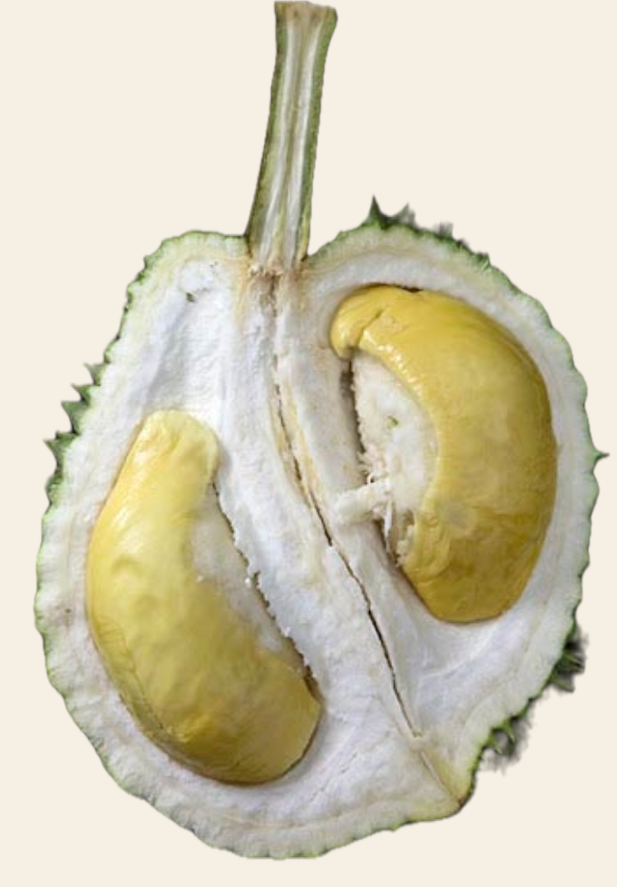
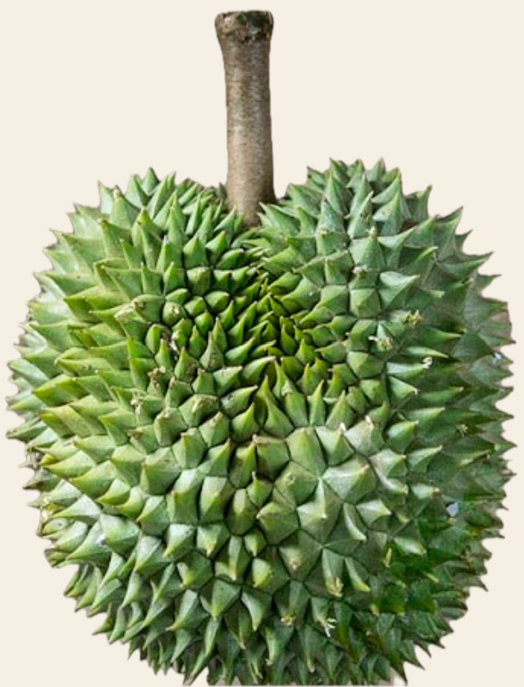
Old-school charm. Rich and earthy. D145 Cheh Kah is positioned here as a classic, traditional
option for durian lovers who like a heritage-style experience.
This one is for the purists — no frills, just honest durian.
Taste & Texture: Milky-white to yellow flesh, creamy and smooth, with a more traditional flavour profile.
Status: Heritage favourite among old-school durian fans.
Season: June to August
D2 – Dato Nina
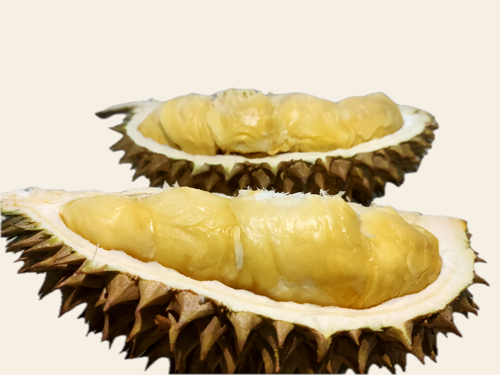
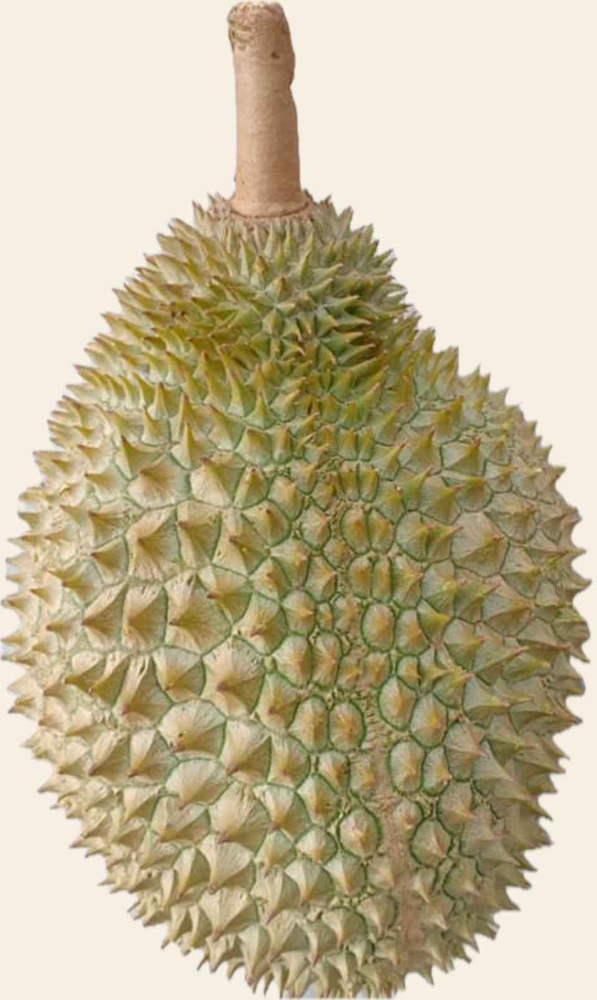
Elegant, delicate and more niche. D2 – Dato Nina is presented as a refined option with a softer,
more composed profile.
Good for customers who appreciate subtlety and nuance.
Taste & Texture: Thick, creamy flesh with a softer sweetness and a more composed finish.
Status: Rarer pick for enthusiasts.
Season: Early season — typically May to July
D13
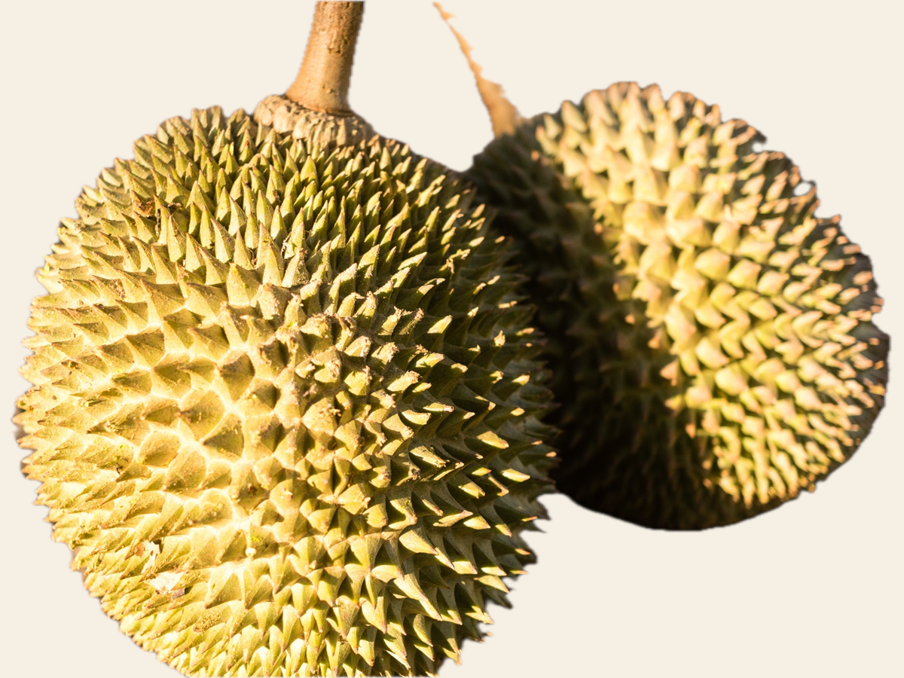
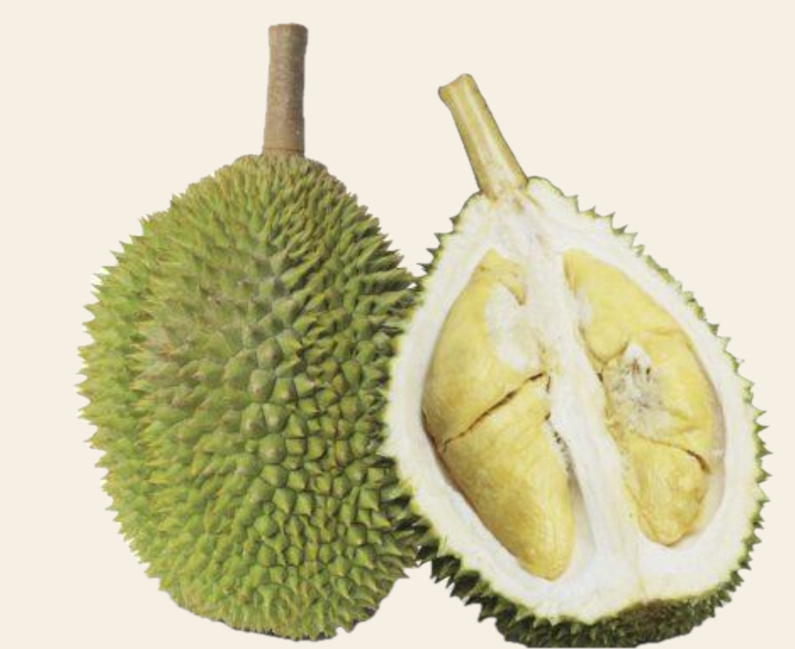
Sweet, bright and crowd-friendly. D13 is a beginner-friendly durian variant with a more
cheerful and approachable profile.
A strong option for sharing with friends or people trying durian more casually.
Taste & Texture: Sweeter, smoother flesh with a creamy finish and lighter overall intensity.
Status: Easy entry point into the category.
Season: June to August
D13.5
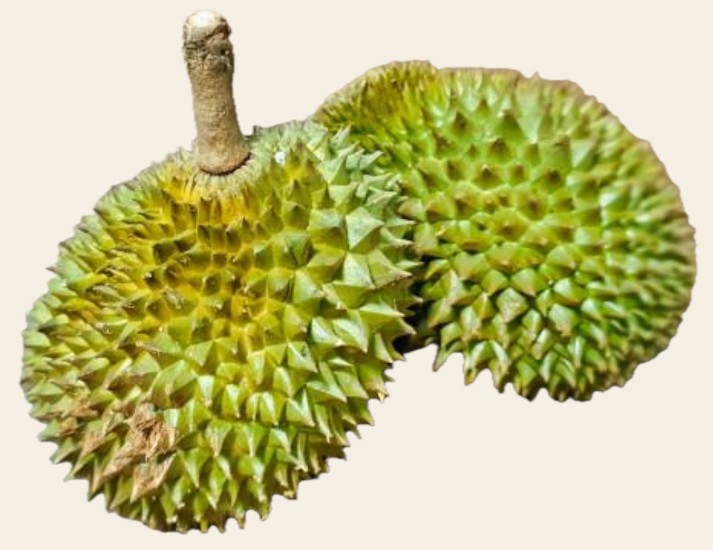

Richer and bolder than D13. D13.5 is positioned as a natural next step for those who want
more depth without going too intense.
Ideal for customers ready to level up slightly.
Taste & Texture: Thicker, creamier and fuller-bodied than D13.
Status: Under-the-radar step-up option.
Season: June to August
D24
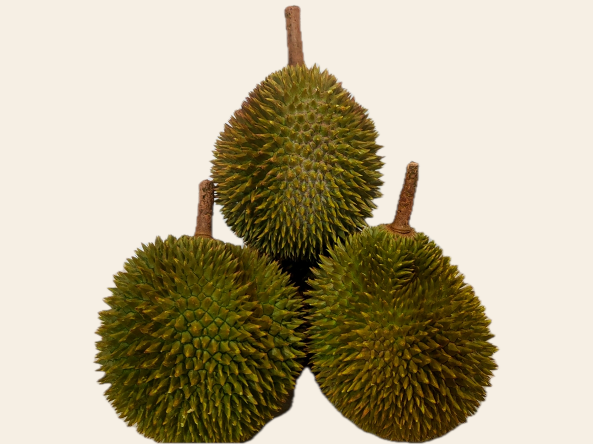
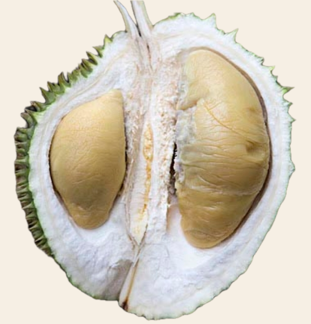
Classic. Reliable. Always hits the spot. D24, also known as Sultan, is the go-to durian for those who appreciate balance.
Not too sweet, not too bitter — just the right harmony of flavour packed into firm, pale yellow flesh.
It is the variety many grew up with, and for good reason.
A great choice if you are looking for something satisfying, flavourful, and easy to share.
Taste & Texture: Flesh is pale yellow to mustard yellow, creamy and sometimes sticky, with thick soft flesh and a bittersweet profile.
Status: A crowd-pleaser and longtime staple across Malaysia and Singapore.
Season: June to September
D78
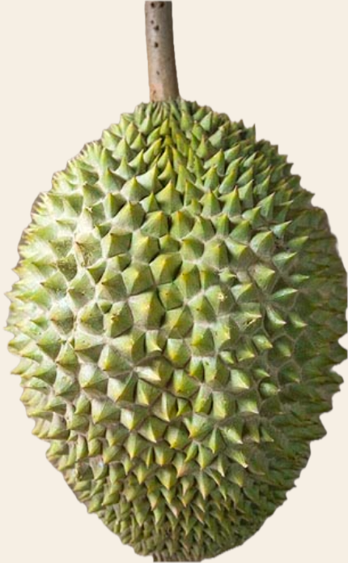

Balanced. Creamy. Quietly addictive. D78 does not boast, but it delivers — a dependable mid-range durian that often flies under the radar.
With a smooth, buttery texture and a mellow bittersweet profile, it sits right in the middle and wears that well.
It is ideal for people who want something balanced without going too sweet or too intense.
Taste & Texture: Pale yellow dry flesh, mildly sweet, creamy, with a slightly bitter note and hints of nuttiness.
Status: A quiet contender known among insiders and loved by those who seek balance.
Season: June to August
D88
Bold. Buttery. No-nonsense. D88 is for those who like their durians with a bit of punch.
Its rich, custardy flesh gives you a firmer bitterness up front, followed by a lingering sweetness that coats the palate.
Slightly firmer than some creamier varieties, D88 offers a satisfying bite and a fuller durian experience.
Taste & Texture: Dry pale yellow flesh, sometimes with a pinkish hue, firm, creamy and slightly fibrous, with large fleshy seeds.
Status: A popular choice among seasoned durian eaters — bold but not overpowering.
Season: June to September
D100
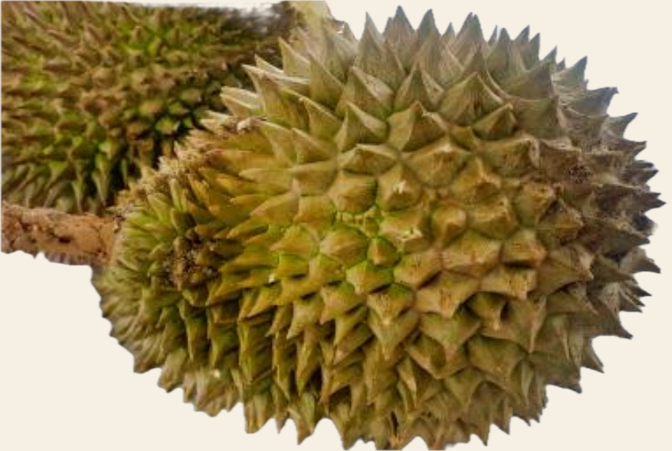

Silky. Sweet. Sneakily addictive. D100 is the smooth talker of the durian world — gentle on the nose, but rich on the tongue.
Its flesh is soft, velvety, and almost mousse-like, with a light sweetness that slowly reveals subtle layers of bitterness.
Ideal for those who enjoy a mellow but layered durian experience.
Taste & Texture: Thick white-to-yellow flesh, creamy, moist, and rich, with a stronger emphasis on bitterness beneath the sweetness.
Status: A quiet favourite among those who prefer elegance over intensity.
Season: June to August
D101
Smooth. Sweet. Super likeable. D101 is the ultimate people-pleaser — mild enough for beginners,
yet creamy and satisfying enough for durian lovers who want something easygoing.
Perfect if you want a fuss-free, feel-good durian that almost everyone can agree on.
Taste & Texture: Golden yellow or orange flesh, creamy, slightly moist and a bit fibrous, with a gently sweet finish.
Status: A staple at many stalls — friendly, reliable, and easy to love.
Season: June to August
D160 – Tek Kah (Green Bamboo)
Clean. Cool. Confident. D160, better known as Tek Kah or Green Bamboo, stands out with a sharp, refined flavour profile that durian purists love.
Its firm, slightly dry flesh carries a bold bitterness with just enough sweetness to keep things balanced.
A top choice for those who crave that classic, punchy old-school bitterness with structure and edge.
Taste & Texture: Bittersweet with a strong floral fragrance, firm pale greyish-yellow flesh, smooth and creamy with large seeds.
Status: A connoisseur’s pick — strong character and a cult following.
Season: June to August
D162 – Tawa
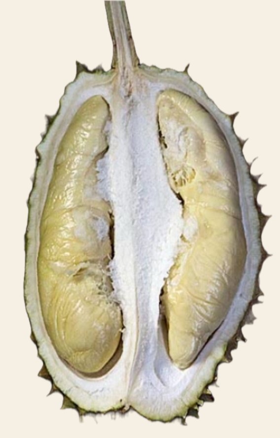

Strong. Sharp. Not for the faint-hearted. D162 is a bold, assertive durian that speaks directly to hardcore fans.
With a thick, creamy texture and a strong bitter bite right from the start, this variety does not hold back.
Best enjoyed by those who like their durian intense, unapologetic, and packed with personality.
Taste & Texture: Pale yellow flesh, less creamy and more pungent, less fibrous, with a firm texture and balanced bittersweet flavour.
Status: A heavyweight pick among veteran durian lovers.
Season: June to August
Red Prawn
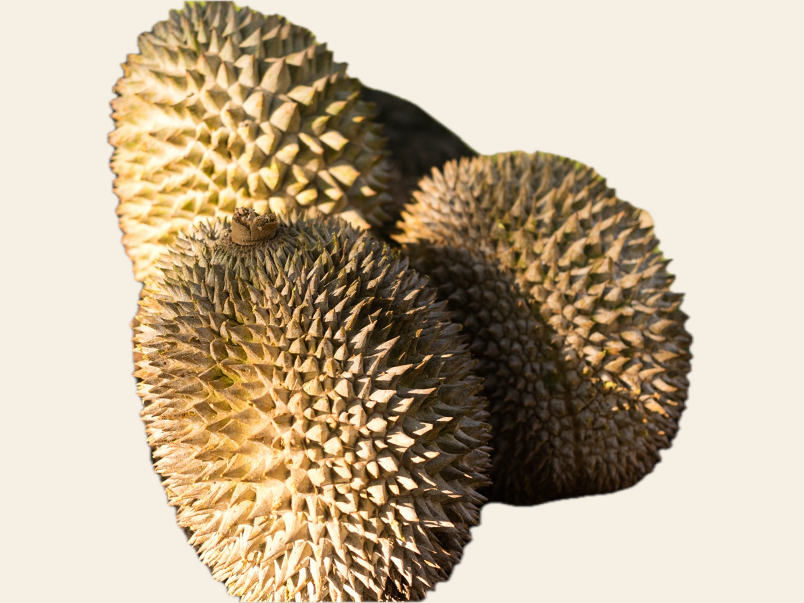

Don't let the name throw you, there's nothing fishy about Red Prawn
(Ang Hei). This fan favorite is all about comfort and indulgence. With its
peachy-red hue and ultra-creamy flesh, Red Prawn delivers a naturally sweet taste that's
milder and rounder than its more intense cousins. It's the kind of durian you can keep
eating without realizing how far you've gone.
This is a rich, moist to wet durian - perfect for durian fans or anyone who just wants
something smooth, sweet, and deeply satisfying.
Taste & Texture: It is known for its light pinkish tone to orangey in colour,
creamy and smooth and fiberless, custard-like consistency, sweet, sticky and sometimes has a
bitter taste with a milky or champagne-like alcoholic flavour, seeds range from small to large.
Vibe: Less bite, more bliss; great for sharing (or not)
Season: June to August
Kampung Durians
Wild. Diverse. Full of surprises. Kampung durians aren't from cloned or grafted trees, but
grown naturally from seeds, which means every fruit is a little different. You might get one
that's sweet and floral, another that's deeply bitter and funky, or one with a perfect
bittersweet balance. No two seeds taste exactly alike, and that's part of the charm.
Ideal for durian lovers who enjoy variety, mystery, and the thrill of the unexpected - like a
lucky dip in fruit form.
Taste & Texture: Range from bitter, sweet or bittersweet, creamy, thick
custard-like flesh, flesh ranges from yellow to white and even orange in colour, seeds can be
big and some small, can be fibrous for some, older trees durians have even notes of alcohol
hints with bitter taste.
Status: The original durian experience - beloved for its natural diversity and
nostalgic kampung character.
Season: June to September
Lao Tai Po
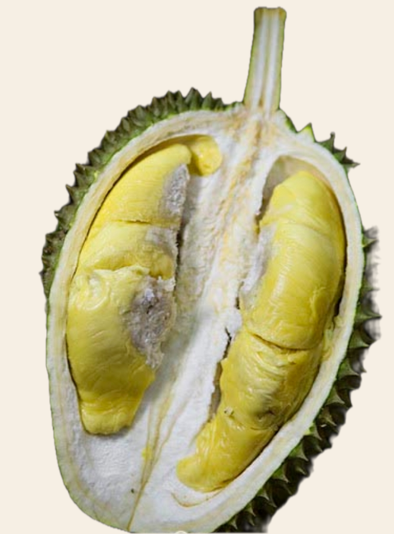

Old-school. Bold. Packed with attitude. Lao Tai Po, which means "Old Grandmother", lives up to
its name with a deep, mature flavour profile that doesn't hold back. Expect a thick, slightly
dry texture paired with a strong, lingering bitterness and a sharp, fermented edge. It's the
kind of durian that hits you fast and stays with you: raw, real, and unforgettable.
Perfect for seasoned durian fans who like their fruit strong, funky, and full of old-soul
character.
Taste & Texture: Flesh is pale, almost white yellow in colour, its also thick,
moist and wrinkly texture that tends to breaks easily, its known for its bittersweet flavour
with a combination of buttery and creamy texture, seeds range from small to large in size.
Status: A vintage variety cherished by hardcore durian purists and older generations.
Season: July to September
Mini Mao Shan Wang (MSW)

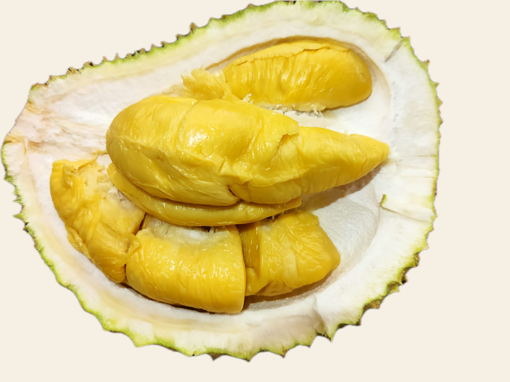
Prepare your senses for the king of all kings - Mao Shan Wang, also known as
Musang King. With its golden-yellow flesh and unmistakably rich, buttery texture, this
is the durian that aficionados dream of. Bold and unapologetically intense, every bite
delivers a luxurious blend of bittersweet creaminess, laced with notes of roasted almonds and
a whisper of cognac.
Encased in a green husk marked by its signature starburst at the base, the Mao Shan Wang
doesn't just stand out - it rules. Whether you're a lifelong fan or a first-time thrill
seeker, this is the durian that sets the bar.
Taste & Texture: Flesh is mostly yellow in colour, bittersweet yet creamy,
buttery and smooth, sometimes with a slightly fibrous texture, less bitter than old trees,
mostly small seeds.
Status: Malaysia's most coveted durian, often imitated, never duplicated
Season: From June to August
Golden Phoenix
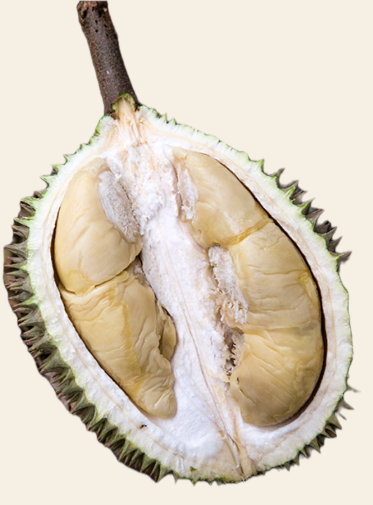
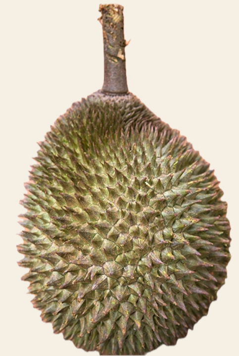
Light. Lush. Deceptively potent. Golden Phoenix, or Jin Feng, may look dainty with its
pale, almost ivory-coloured flesh, but don't be fooled: it delivers a sharp, complex punch.
With a distinct bitter edge, slight fermentation notes, and a drier, custard-like texture,
it's a favorite among those who like their durian lean but layered. It's also one of the
earliest varieties to arrive each season - a welcome preview of what's to come.
Ideal for those who like a strong flavour without the heavy richness.
Taste & Texture: Flesh is dry, pale yellow to creamy whitish in colour,
bitter taste with a potential alcoholic aftertaste, flesh is typically moist and thick and
sometimes creamy or buttery small seeds.
Status: A sought-after early-season variety - bold, elegant, and memorable.
Season: May to July
Kasap Merah
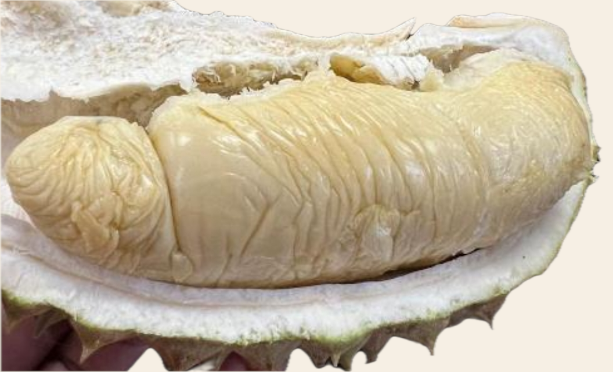

Rare. Rustic. Strikingly unique. Kasap Merah stands out with its distinctive reddish-orange
flesh; a visual feast before the first bite. But it's more than just good looks. This heritage
kampung-style durian offers a firm, slightly fibrous bite with a bold, earthy flavour profile
that leans toward the bitter end. It's less about creamy sweetness and more about texture,
depth, and character.
Best suited for adventurous eaters and old-school durian lovers looking for something off the
beaten track.
Taste & Texture: Flesh is pale yellow to almost white in colour, creamy, soft
and fleshy, has a moist to wet texture, sometimes sticky flesh, mildly sweet, known for its
bittersweet flavour profile with an alcoholic taste, best to take it chilled.
Status: A rare kampung variety treasured by collectors and traditionalists.
Season: July to September
XO
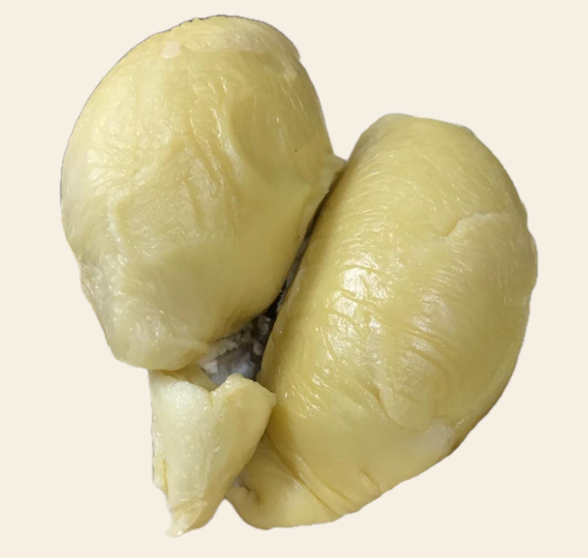

Sharp. Boozy. Not for beginners. XO is the rebellious, late-night version of durian - rich
with fermentation notes and an unmistakable alcoholic bite. Aged longer inside the husk before
opening, this variety develops a sharp bitterness and strong aroma that hits immediately. The
flesh is soft, wet, and almost slippery, with an aftertaste that lingers like a fine spirit.
Perfect for seasoned durian eaters who crave complexity, intensity, and a bit of edge.
Taste & Texture: It's known for its bitter taste with a distinctive alcoholic
aftertaste, flesh is pale yellow and can appear watery, creamy, texture generally soft &
moist. It has a strong pungent aroma sometimes described as a mix of sweet, fruity and even
onion or garlic notes.
Status: A cult favorite among hardcore durian lovers and late-season loyalists.
Season: July to September